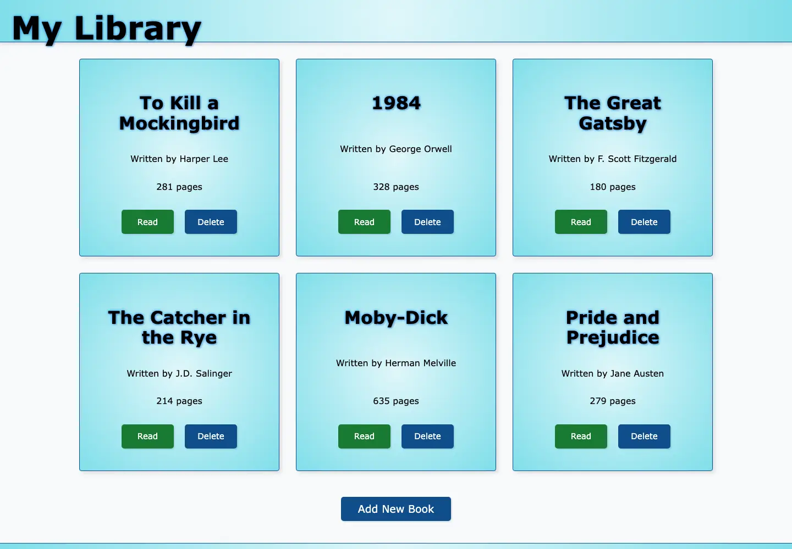
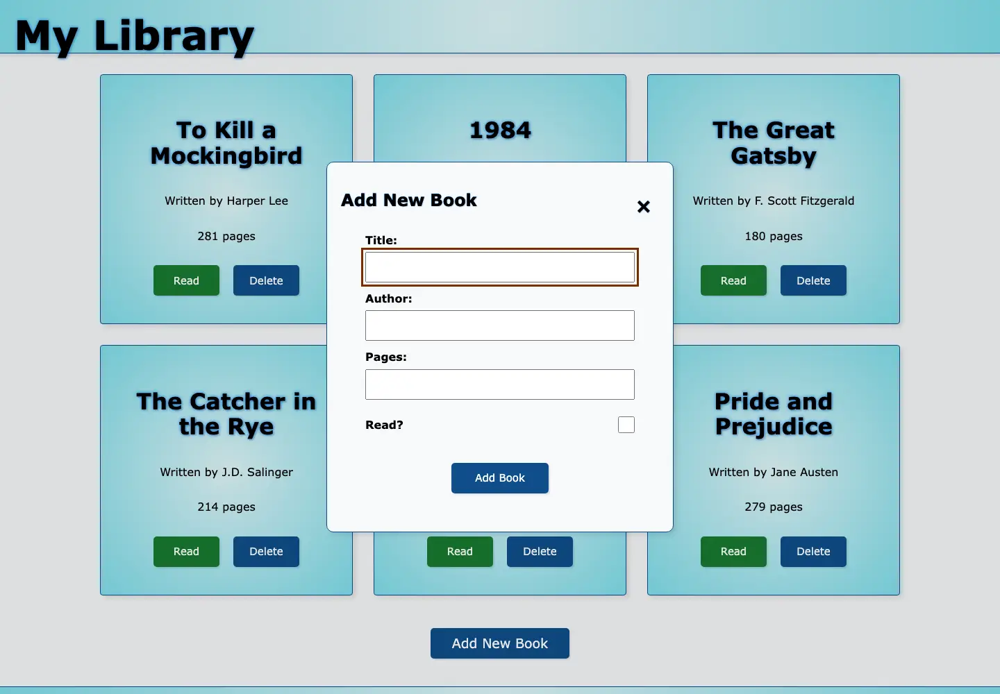

Vanilla JavaScript project
Library App
A simple, persistent home for a personal reading list.
Library App is a focused browser-based collection manager built with HTML, CSS, and vanilla JavaScript. A responsive card layout keeps each book easy to scan, while native dialogs support adding and removing titles without interrupting the experience.

The experience
Simple interactions, clearly presented
The interface stays focused on a short set of useful collection-management actions. Each one is designed to remain understandable without instructions or visual clutter.
- Add
- Create a book with its title, author, page count, and current reading status through a validated native dialog.
- Track
- Change a title between read and unread directly from its card, with the current state communicated visually and to assistive technology.
- Remove
- Delete a title through a clearly named confirmation dialog that preserves keyboard focus and context.
- Keep
- Browser storage preserves the collection and its reading status across visits without requiring an account.

Application quality
Small in scope, careful in execution
Library App keeps its implementation straightforward while applying clear semantics, predictable keyboard behavior, focus management, form validation, and resilient state handling.
The application is deliberately small but dependable: changes persist, malformed saved data is handled safely, and every core action works without a mouse.
- Semantic structure
- Landmarks, articles, logical headings, labeled controls, and named dialogs provide a clearer document and interaction model.
- Keyboard support
- Visible focus states, appropriate focus movement, Escape-to-close behavior, and screen-reader announcements support accessible operation.
- Persistent state
- Versioned local storage preserves valid collections, including an intentionally empty library, and fails safely when saved data is unavailable.
- Maintainable behavior
- Centralized event handling, stable identifiers, and predictable dialog state keep the JavaScript compact and easier to reason about.
Technology
Small by design
- Front end
- Vanilla JavaScript · Semantic HTML · Responsive CSS
- Browser capabilities
- DOM APIs · Web Storage · Native dialogs · Stable identifiers
- Delivery
- Git · GitHub · GitHub Pages
Explore the finished project
Build a collection in the Library App.
Add a title, update its reading status, and see how the focused interface adapts across screen sizes.